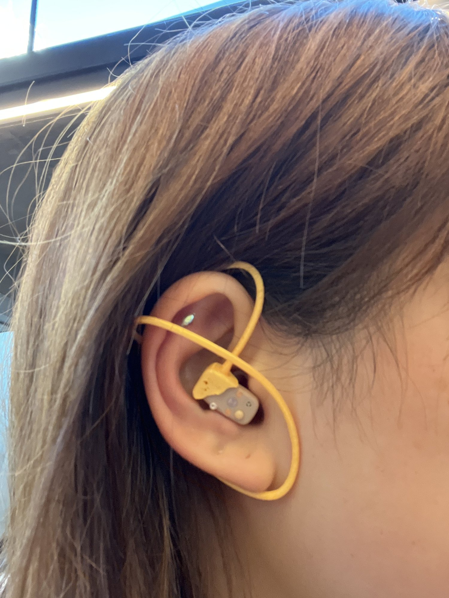
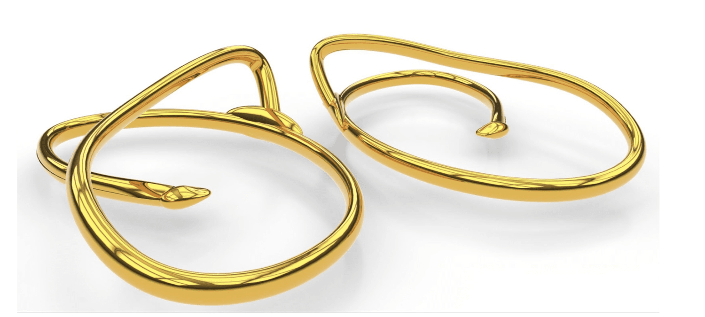

Auracle is an over the ear hearing aid designed with accessibility, affordability, and aesthetics in mind. The shape allows for elderly users with fine motor control difficulties to easily wear and remove the aids. Additionally, the jewelry design is meant to reduce stigma or fear of wearing hearing aids throughout the day.
This is my BME Capstone Project in collaboration with Avery Tompkins, Justin Song, Lois Yun, Riley Zhao, and Rita Paixao

